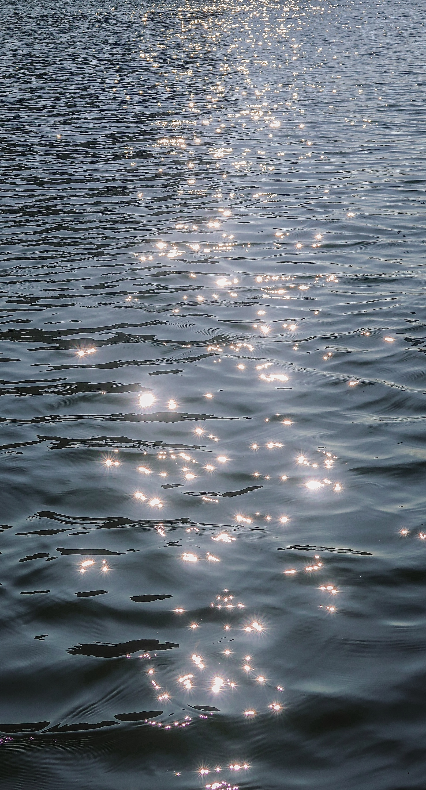

- Introduction
- Career
- Works
Career

2017.02 세종대학교 국제학부 입학
2017.10.27 세종대학교 교내 제4회 SW경시대회(세종코딩챌린지위크) 장려상
2017.10.31 세종대학교 교내 제5회 인문과학대학 학술제(팀명:둘리정원) 2등
2018.03.07 세종대학교 세종나눔봉사단 세종나누리11/12기 (1년)
2018.04.13 MG새마을금고 대학생 기자단 4기 활동 시작 (8개월)
2018.07.13 교내 국제학부 특성화사업단 주최 제3회 2L+ 프로젝트 캠프 미래상
2018.09.18 교내 국제학부 CK사업단 주최 창업 아이디어 경진대회 은상 (팀명:Fravel)
2018.12.22 세종대학교 제31대 인문과학대학 올인원 학생회 홍보국장 (1년)
2019.08.19 KB금융그룹 대학생 서포터즈 KB별난청춘 3기 활동 시작 (4개월)
2019.11.01 교내 제2회 호텔관광대학/전자정보공학대학 연합학술제-HI학술제 대상
2019.11.29 교내 제6회 인문과학대학 학술제 동상(팀명:핑퐁)
2020.05.07 한국관광공사 경인지사 경인 여행리포터 가봄 2기()